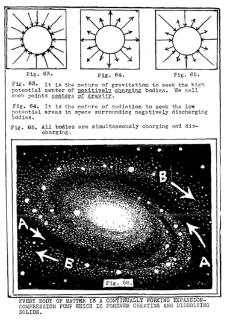
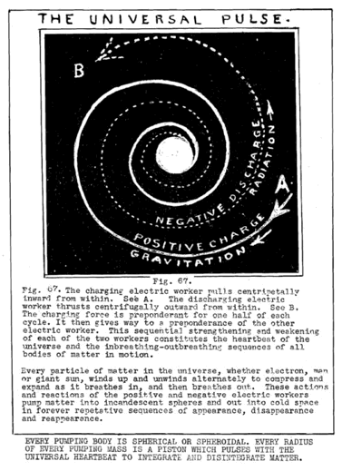
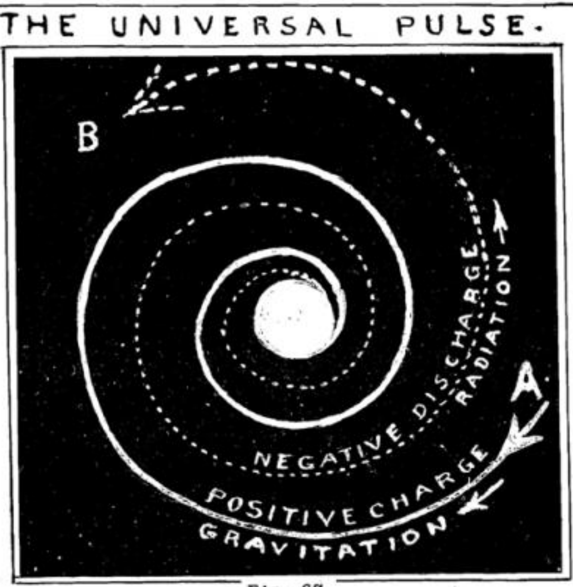
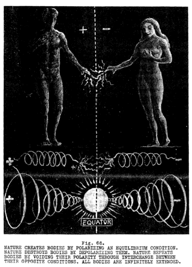
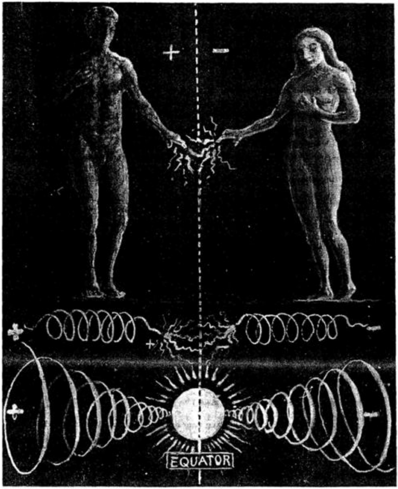

Lesson 29: The Spiritual Significance of Electric Polarity¶
We have progressed to a point where you can now comprehend why God divided His thinking into pairs of opposite electrical mates to make two polarized units of every creating thing, whether mineral, vegetable or animal. What was God’s purpose in creating your polarized body?
GOD’S ONLY PURPOSE IN CREATING HIS WHOLE UNIVERSE OF BODIES IS TO EXPRESS HIS ONE IDEA OF LOVE, AS MANIFESTED BY HIM IN GIVING AND REGIVING BY EVERY OPPOSITE MATE IN NATURE TO EVERY OTHER OPPOSITE MATE.
This fact we must thoroughly understand. If we thoroughly understand it we can then know that the solution of all of life’s problems lies in our knowledge of HOW TO MANIFEST THAT LOVE PRINCIPLE. That is all that life is for. We have just begun to learn its lessons.
When we do understand it we will then know what matter and motion IS–and why God created matter and motion.
We will then understand that LOVE IS LAW–the one and only law in God’s universe–the ONE DIVINE LAW.
We will also realize that love is POWER–the only power in all the universe.
With that knowledge we can use that POWER and command that LAW to work with us–for we will then know that God’s LAW is our Law. Each man will knowingly command HIS OWN DIVINE LAW to obey his omnipotent will. Each man who thus commands his law to work WITH him will be able to authoritatively say: “I and my Father are ONE.”
You are studying THE DIVINE ILIAD MESSAGE to acquire this omniscience.
To the extent that you do acquire it you will have transformed yourself from one who is his own victim of self-inflicted punishment, for lack of that knowledge, to one who has found its mighty power in its acquisition.
Let us, therefore, look deeply into this idea of God’s purpose of making two opposite kinds of bodies of all things of His creating.
ONENESS–UNITY–BALANCE¶
f. 0266 · p. 266GOD IS ONE. God created countless pairs of oppositely conditioned ones in order that they should manifest ONENESS through interchange of giving and regiving to void their seeming separateness.
GOD IS UNITY. God created countless disunited pairs of seemingly separate units in order that each disunited one of each seemingly separate pair could manifest its unity with the whole by equal interchange with the whole. Pairs of seemingly separated and disunited man-units will fulfill God’s idea and purpose when these countless unit pairs know each other as the One Eternal Being beyond even that idea conveyed by the expression of UNIVERSAL BROTHERHOOD OF ALL MEN. When man finally knows of his unity with God as the One Universal Being, the One Presence in all this universe, he will have progressed beyond the idea of the brotherhood of the many, for the many will have become voided in their unity as ONE.
GOD IS BALANCE. God divided His IDEA of balance in His Self by creating pairs of unbalanced conditions–each of which is the opposite of the other. He commanded each of these unbalanced pairs to seek balance through each other by interchanging their unbalanced conditions.
THAT COMMAND IS GOD’S ONE INVIOLATE LAW. IT IS GOD’S ONLY LAW. IT IS THE LAW OF BALANCED GIVING AND REGIVING, IT IS THE LAW OF LOVE.
Your whole purpose in life is to comprehend that law.
You cannot fulfill God’s law unless you do comprehend it.
You cannot comprehend it unless you desire to comprehend it.
You cannot fulfill your desire to command the law to work WITH you until you manifest your desire through action.
There is no other way for you to command God’s law to fulfill your desire than through the action of GIVING.
The only lesson of your life is to learn how to GIVE. That is all. There is no other. You do not have to learn how to TAKE for you cannot take without breaching God’s law.
Nor can you RECEIVE that which you have not GIVEN, therefore have no thought of receiving.
MEDITATE UPON THE FOLLOWING THOUGHTS UNTIL YOU KNOW THEM
YOU have always been–as God has always been. God created your body around the eternal YOU as one of a divided pair of bodies. That which you think of as your body is but one unbalanced half of one balanced whole. Neither half is, nor can be the whole.
God gave you a visible body to manifest the eternal YOU in the visible universe. YOU desired to have a body to manifest your Self. YOUR desire was God’s desire. God desired that you should have a body to manifest His Self. Your Self and God’s Self are ONE.
In creating your body God created seeming SEPARATENESS, seeming DISUNITY and seeming UNBALANCE.
God divided all bodies into pairs of oppositely unbalanced conditions. To one half of each pair God gave one condition. To the other half He gave the other condition. Every idea in God’s universe is manifested in matter by two oppositely conditioned bodies which perpetually interchange to simulate each idea by interchanging motion.
God separated all of His divided pairs of divided bodies by equators. Equators are invisible planes of balance which divide all pairs of oppositely unbalanced conditions.
One half of that which your body needs for its continuance –or for its extension–or for its reproduction–is not in your body. It is in the other half of your body. It is on the other side of the equator which divides your body into two opposite conditions. It is in the invisible half of you.
f. 0267 · p. 267Conversely, one half of that which the other half of your body needs is in YOUR body. God gave to the other half of you what YOU need–and He gave to YOU what the other half needs.
Without that other half which is the other side of your equator which separates you from your oppositely polarized other half, you could no more continue your bodily existence than one cell of a storage battery could continue to operate without the other.
ALL THOUGHTS AND ALL BODIES ARE TWO¶
What we have said about the creation of material bodies in pairs, also applies to thought bodies, for they also are created in pairs.
Your Mind-Soul is ONE. Your Soul is YOU. Your body is not YOU. From the Mind-Soul of the ETERNAL YOU your electric thinking extends as TWO. Your electric thinking creates thought bodies formed in the image of Mind conceiving. Thought bodies are TWO. Concepts of your Mind center the TWO pulsations of your electric thinking as a still fulcrum centers a moving lever. The moving lever is TWO, extending from ONE.
Your eternal Soul is the still fulcrum of YOU. Your THINKING is the lever of motion which creates pulsing thought bodies–and your physical action is the lever which creates pulsing material bodies.
Your power is in your Soul. Your ability to express that power is dependent upon the measure of your awareness of your Soul as the fulcrum of your body–or of the Universal God Soul as the fulcrum of God’s Universal body. And it is also dependent upon the measure of your awareness of the ONENESS of YOUR Soul with the Universal Soul.
How can I burn these thoughts into the comprehension of your very Soul? To carry them further, without pausing to make them a part of your Conscious KNOWING, would but confuse you.
They MUST be carried further else you will never comprehend what happens to your body after death–in that interval between death and rebirth–nor will you comprehend how you acquired a body or why you cannot keep it–nor will you ever dynamically KNOW what your Soul is in relation to your Mind, and to your body.
Let us pause, therefore, and exemplify these thoughts objectively.
GIVE HEED TO THESE NEW THOUGHTS¶
First, we must revise our concepts concerning the Soul. It is commonly believed that only humans have Souls. It is also commonly believed that each individual has an individual Soul which is as separate and apart from all other Souls as people are separate and apart from each other.
This is not a true concept. There is but One Soul as there is but One Mind. The Soul is the Desire quality in Mind which causes Mind to want to create bodies to manifest divine idea. But Mind creates bodies by extending them from still centers. The still center of every body is its Soul. It is the Light of God its Creator.
Mind is creating bodies everywhere. There is no point anywhere in the universal equilibrium which underlies all motion where a body is not being created, no matter how ultra microscopic or macrocosmic that body is. Every point in the universal equilibrium is a point of desire which is the seed for the extension of bodies.
f. 0268 · p. 268Within every electron, atom, sun or galaxy is a still center from which point the desire to extend a body causes the extension of a body.
That still center of every body is its Soul. It is where God, the Creator, takes his seat to unfold and refold that particular body in accordance with the One Law He has made by means of which He governs His divided universe of polarized electric opposites.
Just as God is everywhere so, likewise, is Soul everywhere.
MAN’S ONE SOUL¶
The Soul of man is the still center of his Consciousness. That is the point of KNOWING from which desire to create his body extends. That is the seat of his Mind from which his thinking extends in two polarized directions.
To better visualize this principle refer back to figure 15 on page 171. Also refer to every diagram and paragraph which explains The Divine Trinity.
The Soul is the DESIRE of Mind to manifest idea of Mind. The Soul manifests Mind-idea in imaged form by seemingly dividing and extending the Light of Mind THROUGH polarized opposites.
The two electric workers of God’s thinking wind these two divided lights into dense bodies surrounded by gaseous counterparts. They then unwind dense bodies for redistribution into space in order to repeat that process over and over again forever.
MAN’S MANY SOULS¶
Man’s body is not one. It is composed of countless millions, or even billions of little spheres which are insulated from each other by space surrounding each one, just as the suns of heaven are likewise insulated from each other. Each visible sphere is one half of a body. Its surrounding cubic wave-field of space is the other half.
Every one of these purposeful little spherical particles are centered by the still Light of God. That still Light is the Soul of each of the millions of bodies which form the body of a man.
We will necessarily have to await a further expansion of this idea until later, but for the present we will briefly say that every visible body has its invisible, but equal measure of electric potential in space. Space is not indefinite or infinite in measure, nor is space formless. SPACE IS THE OTHER MEASURED HALF OF EVERY BODY WHICH FLOATS IN IT, AND THAT OTHER HALF IS NOT ONLY MEASURED BUT IS BOUNDED BY A WAVE-FIELD OF DEFINITE FORM.
God makes spherical bodies of visible dense matter surrounded by cubic bodies of invisible expanded matter. God then compresses His cube-spheres into many forms consisting of many cube-spheres. There are no other forms in Nature than these cube-spheres and sections of them. All spheroidal forms are spheres in the making and unmaking, while invisible forms in space surrounding the visible spheres which center them, are cubes and cube sections. All crystal forms in the chemical elements procure their visible forms from their invisible counterparts in space.
That is all we can say of this subject at this time. We will expand this idea later when we are ready for it.
f. 0269 · p. 269ALL BODIES ARE TWO¶
We must revise our concepts concerning bodies.
It is commonly believed by every man that his body is that organism which is contained within his skin. That is a totally wrong conception and must be revised.
Your actual body reaches a long way under the earth, and very high into the heavens above the earth. You are seemingly separated from that other visible and invisible part of your body, but actually you are not, for what you think of as your body could not survive five minutes if severed from its extensions from earth and space.
You are separated from your extensions by equators only. Half of what your visible body needs is on the other side of the equator which divides your electro-positive visible body from its electro-negative invisible mate. Conversely, half of what your invisible body needs is within you.
It is absolutely imperative that each half of your body constantly give to the other half, and it is as certain that each giving shall be regiven as that night will be followed by day.
What you think of as your body is a patterned extension of the earth, to which you are inescapably rooted, and it is also an extension of space surrounding the earth, within which you are temporarily compressed. It is merely a small nucleus of a very extended dual body which is hundreds, if not thousands of times larger than your visible body.
Figure 62 exemplifies the dual electric wave-field which encloses every body-pair. The low electric potential which surrounds every visible body is equal to that of its dense center but unequal in volume, the outer decentrated half being thousands of times greater in volume than the concentrated inner half.
f. 0270 · p. 270
Archival Plate (image052.gif)¶

Archival Plate (image053.gif)¶

Archival Plate (image054.gif)¶





Figure 63 diagrams the inbreathing of the central half from its outer mate which generates it by pumping the low potential of the outer half into the inner half to increase the potential of the inner half. This inbreathing of inner bodies from outer bodies is what is called GRAVITATION. Gravitation is the compressive half of the electric cycle which pulls inward from within to manifest life. It is the charging half of the electric cycle. It charges the inner body by discharging the outer one.
Figure 64 is the reverse of figure 63. It is the outbreathing of the inner body toward the outer half which is called RADIATION. Radiation is the expansive half of the electric cycle which thrusts outward from within to manifest death. It is the discharging half of the electric cycle. It charges the outer body by discharging the inner one.
Figure 65 illustrates the sequential inbreathing and outbreathing which is continuous in every body in the universe, whether it be an electron or giant nebula. This sequence is the heartbeat of God’s body.
Figure 66 illustrates the interchange between all dense and spatial bodies. The two black gravitating spiral lanes are generative light which winds up its visible center by compressing it. It pumps inward from within, RADIALLY, for one half of each heartbeat. (See A-A)
Conversely, the two light radiating lanes are degenerative light which unwinds its visible body by expanding it into space until it becomes invisible. It pumps outward from within, RADIALLY, for the other half of each heartbeat. (See B-B )
During one half of a man’s life cycle his power to generate his inner body into stronger life is greater than the power of his outer body to degenerate it toward so called “death”. During the other half the power of his outer body increases until the inner body disappears from within the range of man’s sensing. It still exists, however, for there is no death.
All expressions of God’s idea, as manifested in bodies, are continuous. Bodies never cease to be, even though they disappear. Even though they pass beyond the range of man’s sensing they do not pass beyond the range of his knowing. Also that point of desire which is in the Soul of idea will always repeat the dual body of that idea when the conditions of environment make it possible for the two electric workers to reborn the body forms of the idea.
Figure 67 graphically illustrates the pulsing heartbeat of God’s body as one half of the electric cycle creates the visible half of a body and the other half of it creates the invisible half by each interchanging with each other simultaneously and sequentially.
Figure 68 illustrates how two oppositely polarized bodies repeat their patterns through each other by voiding their dividing equators and find balance in each other through uniting their respective wave-fields into one inclusive one.
MISCONCEPTIONS REGARDING BODIES
What you think of as your LIVING body is that part of you which you can see when you look into a mirror. Your senses tell your senses that your body is alive. They tell you that your heart is beating, and that all organs of your body are functioning to make of your body a living organic thing.
God has given your senses the power of perceiving only a small range of the whole circle of effect. That small range would not extend over twenty degrees of the whole three hundred and sixty which would allow you to see effects that are now invisible if you had but another ten degrees.
The human race is gradually increasing its range. When we discover that increase in a few people–out of the many–we call it extra sensory perception.
We will talk about that later.
f. 0275 · p. 275Your present range of senses tell you, however, that your body is absolutely dependent upon the earth and its surrounding space, but you do not realize your identity with that part of your body which is outside of you.
That which is your body is also the earth. Your body was extruded from Earth–pushed out from it into space. Your body radiated from the Earth but Earth’s gravity chains you to Earth. The body which Earth gave to you you must regive to Earth.
Conversely, Earth was compressed from space. Your body, therefore, is an extension of both Earth and space. Equators separate you from both but that part of your body which is on the other side of those equators must be continually extended to you, else you cannot survive.
You would die of starvation if your roots of Earth did not constantly extend the nourishment of Earth’s soil to replenish your body. Conversely, the soil of Earth would lose its ability to give life to you if you did not regive to it equally.
You were not born from Earth at some time now passed. You are continually and perpetually being reborn from Earth which gives you life in exchange for your death. Earth needs your death that you give to it just as you need the life which it gives to you.
Nor was your first breath which your counterpart in space gave to you that which alone gave you life. During your whole life that other polarized half of you gave life to you in order that you may live. You in turn, give your death to your counterpart in space in order that it may live.
CONCLUSION¶
When we give anything to anybody, we are prone to think that we are that much poorer because we have less than we had. That which we have given leaves us minus just so much. Just so long as we think that way we have not learned the great lesson of Nature which enriches itself ONLY by giving.
When the heavens withhold rains from Earth to give it life the resultant desert has naught to give to the heavens, so both are impoverished. But when a man gives to mankind of his Self, asking naught, nor having an expectant motive for giving, such a man is enriched by that which he has given, for the law of love, as manifested in balanced interchange, is as absolute as that light shone into a mirror will regive equally of that which has been extended to it.